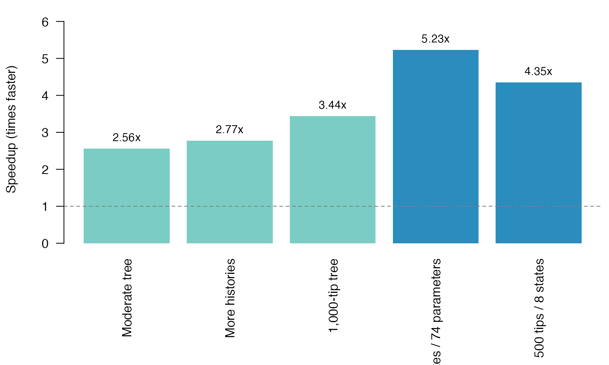

vignettes/hOUwiePerformance.Rmd
hOUwiePerformance.RmdhOUwie now runs between 2.56 and 5.23 times faster across the benchmark set. The largest improvements appear on large trees and models with many states and parameters.
| Scenario | Tips | Histories | States | Parameters | Previous version (s) | Updated version (s) | Speedup |
|---|---|---|---|---|---|---|---|
| Moderate tree | 96 | 25 | 4 | 8 | 0.335 | 0.131 | 2.56x |
| More histories | 96 | 100 | 4 | 8 | 1.283 | 0.463 | 2.77x |
| 1,000-tip tree | 1000 | 25 | 4 | 8 | 4.713 | 1.372 | 3.44x |
| 16 states / 74 parameters | 250 | 25 | 16 | 74 | 1.908 | 0.365 | 5.23x |
| 500 tips / 8 states | 500 | 50 | 8 | 22 | 5.513 | 1.267 | 4.35x |

Speedup of the updated implementation over the previous version.
The moderate 96-tip analysis is 2.6 times faster. Increasing the number of histories from 25 to 100 raises that to 2.8 times. On the larger and more parameter-rich cases, the updated implementation is 3.4 to 5.2 times faster. A 1,000-tip run falls from 4.713 seconds to 1.372 seconds, while the 16-state, 74-parameter case falls from 1.908 seconds to 0.365 seconds.
Every run produced the requested number of stochastic histories. The median size of the returned history objects changed by less than one percent in every case.
Most of the improvement comes from preparing the tree structure once and reusing it. A phylogenetic tree has the same topology throughout a fit. The updated code prepares its paths, descendants, edge positions, and state relationships up front, then keeps compact lookup tables for the calculations that follow.
Tree traversals and tip-to-root paths are prepared once instead of rebuilt for every stochastic history.
Repeated searches through edge and node vectors are replaced with direct indexing.
The likelihood calculation works with a compact representation of each history. Full painted trees are still assembled for the returned result, but they no longer need to be the working format for every intermediate step.
Matrix and cache bookkeeping is lighter, especially when the number of states and parameters grows.
Together, these changes remove a large amount of repeated work from the inner likelihood loop. The 16-state analysis benefits most: the updated implementation spends more of its time on the statistical calculation and less on repeatedly organizing the same tree.
hOUwie estimates a likelihood by averaging over sampled evolutionary histories. That sampling introduces a little numerical movement from one evaluation to the next. An optimizer can mistake that movement for a meaningful improvement and spend time following noise.
The updated implementation compares candidate parameter values with a
shared underlying random stream within each optimizer start. The
histories still respond to the candidate parameters; they are not
frozen. The shared stream simply makes one candidate’s likelihood more
directly comparable with the next. This behavior is enabled by default
and can be controlled with the common_random_numbers
argument to hOUwie().
On an easy example, both approaches found the same answer. On a more difficult hidden-state model, the steadier comparison produced better and more consistent fits on fresh evaluations:
| Measure | Ordinary sampling | Shared random stream |
|---|---|---|
| Mean fresh-evaluation log likelihood | -27.9244 | -27.2323 |
| Median fresh-evaluation log likelihood | -28.0759 | -27.1515 |
| Between-run standard deviation | 0.6145 | 0.2669 |
| Mean likelihood evaluations | 524.0 | 438.5 |
| Mean elapsed time (seconds) | 75.24 | 61.48 |
The steadier search used 16.3% fewer likelihood evaluations and 18.3% less wall time. It found the better fresh-evaluated solution in four of six paired starts. Multiple starts remain important when hidden states create weakly identified parameters or local optima.
The fitting path also includes the following reliability improvements:
Cached likelihoods use the full parameter vector, so distinct candidate models cannot accidentally share a result.
Cache capacity is bounded more safely for long optimization runs.
Failed optimizer results are filtered before selecting the best fit.
Trait data are matched to tree tips by species name rather than assumed row position.
History identifiers work with ten or more states.
Negative trait values are shifted consistently when a model requires positive values.
Input checks and parameter bounds reject several malformed or impossible configurations earlier and more clearly.
The expanded suite contains 235 expectations across 80 tests, covering the faster execution path and these edge cases.